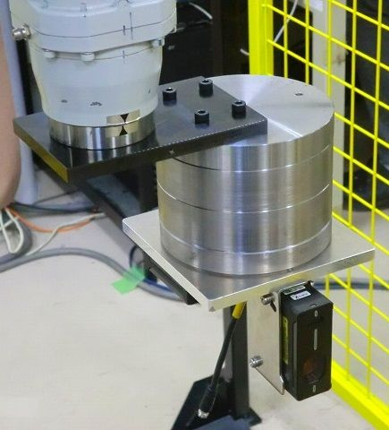

Industrial Robot
(Position Control, Path Tracking Control)
 |
 |
| Vibration suppression control of end-effector position | Mass estimation of end-effector tool |
Vibration Suppression Control of End-effector Position
In factory, industrial robots are used for various purposes, such as welding, painting, and conveying. To improve the productivity and quality, the high-speed operation of industrial robots are required. However, in the high-speed operation, the vibration of end-effector position is acknowledged as a problem.
Considering this problem, we research about the vibration suppression control end-effector in the high-speed operation. To achieve the vibration suppression, we have proposed the feedforward compensation method of dynamic torque and the robust motion control method considering the inertia variation. We also propose the profile design method considering the resonant frequency of each joint, and the decoupling control of each joint considering the interference between the joints.
Mass Estimation of End-effector Tool
The various end-effector tool is attached to the robot arm for the intended use. Depending on the mass and the center of mass of end-effector tool, the control performance of industrial robot is degraded. Considering this problem, we propose the realtime mass estimation method based on the recursive least mean square method. By applying the estimated parameters to the motion control system, the high performance motion control is achieved not depending on the end-effector tools.